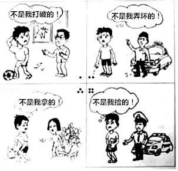

2019年北京市中考政治试题 · 选择题 第6、7、8、9、10题
6．（2分）下面是一段关于友谊的故事。
相识的那一年，他29岁，他39岁。一位情操高尚、平民情愫、家国情怀，一位学识广博、光明磊落、真挚善良。一起工作的日子里，他们谈的是人民的疾苦与病痛，说的是国家的前途与命运：分开的日子里，他们彼此惦念，友情并未随日月流逝而淡漠。他们的心，总是紧紧地连在一起…… |
从中可以领悟到（ ）
①桃李不言，下自成蹊
②孤则易折，众则难摧
③人之相知，贵在知心
④志合者，不以山海为远
A．①②B．①④C．②③D．③④
7．（2分）北京市政府整治城市顽疾，规范环境秩序，改善核心区背街小巷的环境面貌，让胡同成为有绿茵处、有鸟鸣声、有老北京氛围的清净舒适的公共空间，以新的形象展现首都风范、古都风韵和时代风貌。这些做法体现政府（ ）
①关注民生，建设宜居的生活环境
②坚持以生态文明建设为中心
③作为权力机关要依法行使职权
④不断满足人民对美好生活的向住
A．①②B．①④C．②③D．③④
8．（2分）网上流传的一些名人名言并非真的出自名人之口。最近，鲁迅博物馆资料查询在线检测系统上线，鲁迅是否说过相关词句，输入关键词一查便知，还能检索到其对应的文章出处。该查询系统的推出（ ）
①有助于保护鲁迅的名誉权
②能够扩大社会上的名人效应
③可以克服社会的浮躁心态
④利于减少“伪名言”对公众的误导
A．①②B．①④C．②③D．③④
9．（2分）如图给我们的警示是（ ）

A．违反法律需要承担刑事责任
B．面对冲突，未成年人要加强自我保护
C．不良行为可能发展为犯罪，要防微杜渐
D．遇到问题，要善用法律维护自己的权利
10．（2分）我国“十三五”期间脱贫攻坚的目标是，到2020年稳定实现农村贫困人口不愁吃、不愁穿，农村贫困人口义务教育、基本医疗、住房安全有保障。近年来，我国每年减贫超千万人，创造了人类减贫史上的奇迹。材料体现了我国（ ）
①促进协调发展，增强人民的获得感
②坚持共享理念，全面实现了现代化
③实现同步富裕，促进社会公平正义
④尊重人权，保障公民发展权的实现
A．①②B．①④C．②③D．③④